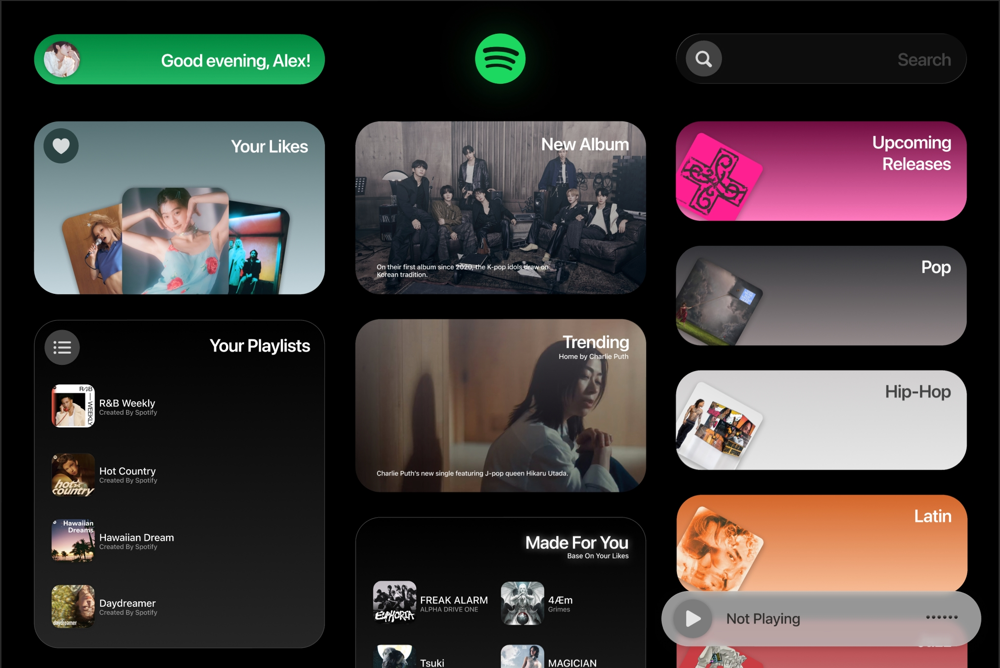

OVERVIEW & INTRODUCTION
A Reimagined
Experience
Traditional music streaming interfaces are often trapped in linear lists and rigid grids. Spotify Modular breaks this convention. By deconstructing the Spotify ecosystem into a fluid, card-based architecture, we move away from a "browsing" experience toward a "discovery" journey. This system is Made up by Cards, the unique and functional elements that pulse, adapt, and resonate with the user's personal rhythm.
The 3 Column
Ecosystem
The interface is strategically divided into three vertical pillars, each serving a distinct purpose in the user's musical journey. This layout ensures that while the content is rich, the navigation remains intuitive.

The journey begins on the left, where the PERSONAL ARCHIVE anchors the experience. This column represents the user's musical DNA—their history, curated playlists, and personal status. By placing the "Self" at the start of the visual F-pattern, we ensure that every session starts from a place of familiarity and belonging.
The energy flows into the DISCOVERY HUB, the expansive heart of the Mosaic. This is where Spotify's algorithmic intelligence meets global trends. Here, the cards expand in scale and visual density, transforming passive listening into an immersive exploration of new albums and trending narratives. It is the bridge between what the user knows and what they are about to love.
The cycle completes on the right with the CONTROL & UTILITY. This column provides the precision instruments—Search, Genre Filters, and Playback. It acts as the "remote control" for the entire ecosystem, allowing the user to filter the chaos of global music into a personalized stream with a single tap.